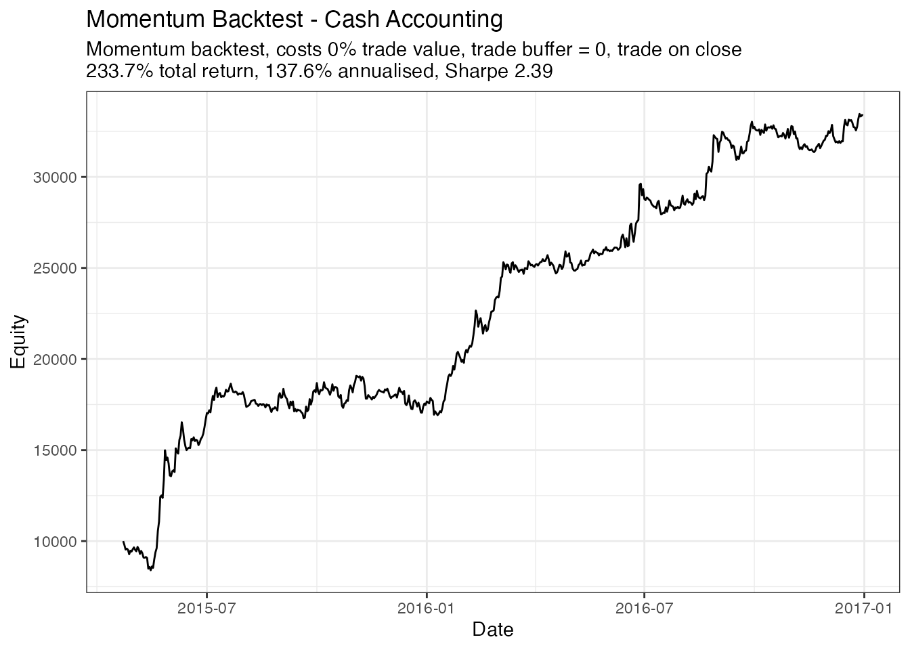

Wrangling-data-for-input-to-simulation-engine.Rmdcash_backtest is a reasonably well-optimised event-driven backtesting engine. In testing, it processed an 80-asset, 2300-day backtest in less than 150 milliseconds.
It was built with speed in mind, which required trading off certain conveniences such as holding weights and prices in long-format dataframes indexed by a human-readable timestamp. Instead, it requires the user to ensure their input data meets some fairly strict requirements.
The purpose of this vignette is to provide an example of how to prepare input data for cash_backtest.
cash_backtest requires two matrixes of identical dimensions. Both matrix’s first column needs to be a timestamp or date in Unix format.
The timestamp should be aligned with the weights and prices such that on a single row, the price is the price you assume you can trade into the weight at. This may require lagging of signals or weights upstream of the simulation and is up to the user. In another vignette, we provide an example of a simple workflow for lagging weights with respect to prices.
The first input matrix contains prices, one column for each asset or product in the strategy’s universe.
The second matrix contains theoretical or ideal weights, again, one column for each asset in the strategy’s universe.
Columns must map between the two matrixes: * Column 1 is always the date or timestamp column * Column 2 contains the prices and weights for the first asset * Column 3 contains the prices and weights for the second asset * etc
Let’s run through an example of how you might wrangle such input data using tools from the tidyverse.
library(rsims)
library(dplyr)
#>
#> Attaching package: 'dplyr'
#> The following objects are masked from 'package:stats':
#>
#> filter, lag
#> The following objects are masked from 'package:base':
#>
#> intersect, setdiff, setequal, union
library(tidyr)
library(ggplot2)
library(here)
#> here() starts at /Users/runner/work/rsims/rsims
# load("~/rsims/data/backtest_df_long.RData")
load(here::here("data", "backtest_df_long.RData"))
head(backtest_df_long)
#> # A tibble: 6 × 4
#> date ticker price weight
#> <date> <chr> <dbl> <dbl>
#> 1 2015-04-22 BTC 234. 0.1
#> 2 2015-04-22 DASH 3.24 -0.1
#> 3 2015-04-22 DGB 0.000110 -0.06
#> 4 2015-04-22 DOGE 0.000109 -0.02
#> 5 2015-04-22 LTC 1.44 0.02
#> 6 2015-04-22 MAID 0.0233 0.18First, let’s assume you have a long dataframe consisting of columns for ticker, date, price, and weight:
How you arrived at the weights for each product for each day is up to you. backtest_df_long contains weights for a simple cross-sectional momentum strategy.
Recall that we need to end up with two wide matrixes of date and prices and date and weights, and that the columns of each matrix must map column-wise.
One easy way to do that is use tidyr::pivot_wider, which will guarantee that prices and weights will be mapped correctly:
backtest_df <- backtest_df_long %>%
pivot_wider(names_from = ticker, values_from = c(price, weight))
head(backtest_df)
#> # A tibble: 6 × 169
#> date price_BTC price_DASH price_DGB price_DOGE price_LTC price_MAID
#> <date> <dbl> <dbl> <dbl> <dbl> <dbl> <dbl>
#> 1 2015-04-22 234. 3.24 0.000110 0.000109 1.44 0.0233
#> 2 2015-04-23 236. 3.67 0.000119 0.000111 1.45 0.0236
#> 3 2015-04-24 231. 3.20 0.000133 0.000105 1.43 0.0224
#> 4 2015-04-25 226. 3.09 0.000122 0.0000997 1.41 0.0225
#> 5 2015-04-26 221. 3.05 0.000123 0.0000976 1.34 0.0207
#> 6 2015-04-27 227. 2.98 0.000120 0.000105 1.38 0.0216
#> # … with 162 more variables: price_VTC <dbl>, price_XEM <dbl>, price_XMR <dbl>,
#> # price_XRP <dbl>, price_ETH <dbl>, price_XLM <dbl>, price_DCR <dbl>,
#> # price_LSK <dbl>, price_ETC <dbl>, price_REP <dbl>, price_ZEC <dbl>,
#> # price_WAVES <dbl>, price_GNT <dbl>, price_GNO <dbl>, price_SNT <dbl>,
#> # price_ETHOS <dbl>, price_EOS_ETH <dbl>, price_BNB <dbl>, price_NEO <dbl>,
#> # price_OMG <dbl>, price_BCH <dbl>, price_GAS <dbl>, price_ZRX <dbl>,
#> # price_MCO <dbl>, price_MANA <dbl>, price_WTC <dbl>, price_ANT <dbl>, …From this point, we can split our single wide matrix into two matrixes. Note that since matrixes must hold a common data type, our date column will be converted to a Unix-style timestamp.
First, the weights matrix, which will have some NA values where we didn’t have a weight for an asset on a particular day in our long dataframe. It makes sense to replace these with zero.
# get weights as a wide matrix
# note that date column will get converted to unix timestamp
backtest_theo_weights <- backtest_df %>%
select(date, starts_with("weight_")) %>%
data.matrix()
# NA weights should be zero
backtest_theo_weights[is.na(backtest_theo_weights)] <- 0
head(backtest_theo_weights, c(5, 5))
#> date weight_BTC weight_DASH weight_DGB weight_DOGE
#> [1,] 16547 0.10 -0.10 -0.06 -0.02
#> [2,] 16548 0.14 -0.06 -0.10 0.06
#> [3,] 16549 0.14 -0.10 0.10 -0.06
#> [4,] 16550 0.10 -0.10 0.06 -0.06
#> [5,] 16551 0.06 -0.06 0.14 -0.02We do the same thing for our prices, but this time where an asset didn’t have a price (for example because it wasn’t in existence on particular day), we leave the existing NA:
# get prices as a wide matrix
# note that date column will get converted to unix timestamp
backtest_prices <- backtest_df %>%
select(date, starts_with("price_")) %>%
data.matrix()
head(backtest_prices, c(5, 5))
#> date price_BTC price_DASH price_DGB price_DOGE
#> [1,] 16547 233.8224 3.241223 0.0001098965 1.091501e-04
#> [2,] 16548 235.9333 3.667605 0.0001194309 1.113668e-04
#> [3,] 16549 231.4586 3.203421 0.0001334753 1.046427e-04
#> [4,] 16550 226.4460 3.093542 0.0001222808 9.972296e-05
#> [5,] 16551 220.5034 3.054431 0.0001227349 9.762035e-05At this point, we are ready to simulate trading according to our weights:
# simulation parameters
initial_cash <- 10000
capitalise_profits <- FALSE # remain fully invested?
trade_buffer <- 0.
commission_pct <- 0.
# simulation
results_df <- cash_backtest(
backtest_prices,
backtest_theo_weights,
trade_buffer,
initial_cash,
commission_pct,
capitalise_profits
)
head(results_df)
#> # A tibble: 6 × 8
#> ticker Date Close Position Value Trades TradeValue Commission
#> <chr> <date> <dbl> <dbl> <dbl> <dbl> <dbl> <dbl>
#> 1 Cash 2015-04-22 1 1 e4 10000 NA NA 0
#> 2 price_BTC 2015-04-22 234. 4.28e0 1000 4.28e0 1000 0
#> 3 price_DASH 2015-04-22 3.24 -3.09e2 -1000 -3.09e2 -1000 0
#> 4 price_DGB 2015-04-22 0.000110 -5.46e6 -600 -5.46e6 -600 0
#> 5 price_DOGE 2015-04-22 0.000109 -1.83e6 -200 -1.83e6 -200 0
#> 6 price_LTC 2015-04-22 1.44 1.39e2 200 1.39e2 200 0
library(glue)
equity_curve <- results_df %>%
group_by(Date) %>%
summarise(Equity = sum(Value, na.rm = TRUE))
fin_eq <- equity_curve %>%
tail(1) %>%
pull(Equity)
init_eq <- equity_curve %>%
head(1) %>%
pull(Equity)
total_return <- (fin_eq/init_eq - 1) * 100
days <- nrow(equity_curve)
ann_return <- total_return * 365/days
sharpe <- equity_curve %>%
mutate(returns = Equity/lag(Equity)- 1) %>%
na.omit() %>%
summarise(sharpe = sqrt(355)*mean(returns)/sd(returns)) %>%
pull()
equity_curve %>%
ggplot(aes(x = Date, y = Equity)) +
geom_line() +
labs(
title = "Momentum Backtest - Cash Accounting",
subtitle = glue(
"Momentum backtest, costs {commission_pct*100}% trade value, trade buffer = {trade_buffer}, trade on close
{round(total_return, 1)}% total return, {round(ann_return, 1)}% annualised, Sharpe {round(sharpe, 2)}"
)
) +
theme_bw()